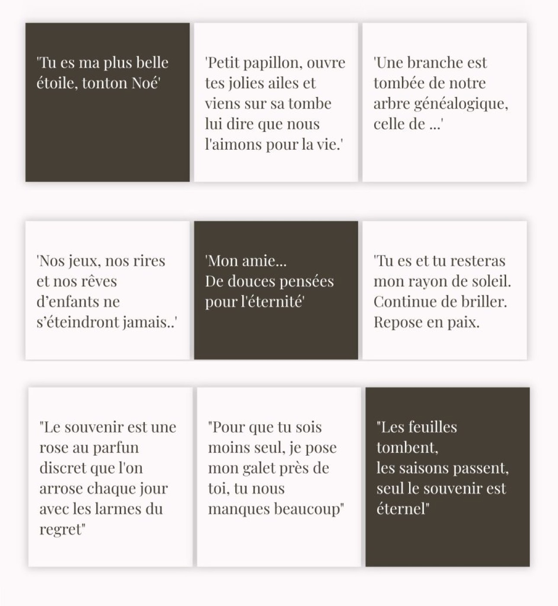

Trouver les bons mots au moment du deuil est une épreuve. La douleur est là, le silence pèse, et pourtant… on aimerait tant dire à quel point on l’aimait, combien il ou elle nous manque, ou simplement rendre hommage.
Sur Google, beaucoup de personnes tapent “texte hommage décès”, en espérant trouver l’inspiration. Chez L’Atelier Inspiré, nous savons à quel point chaque mot compte. C’est pourquoi nous avons rassemblé ici des idées de textes courts, simples et sincères, à graver sur une plaque, à écrire sur une carte, ou à déposer sur un galet funéraire personnalisé.

Comment choisir un texte d’hommage ?
Voici quelques pistes pour vous aider :
• Pensez à votre relation avec le défunt : était-elle tendre, complice, pudique ?
• Préférez des phrases courtes pour une gravure sur galet ou plaque
• Osez la poésie : ce n’est pas le style littéraire qui importe, mais la sincérité
• Parlez avec votre cœur : même une phrase maladroite peut être bouleversante